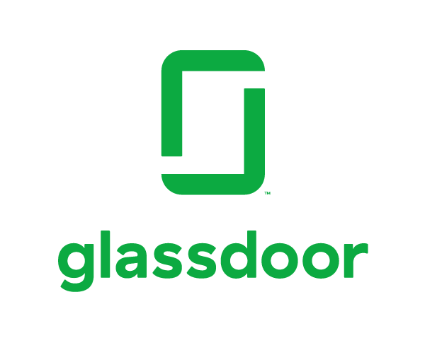
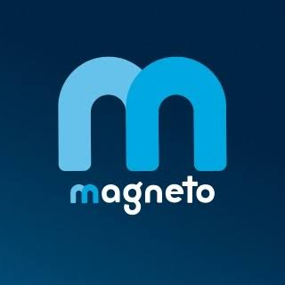
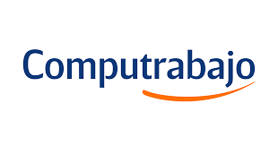
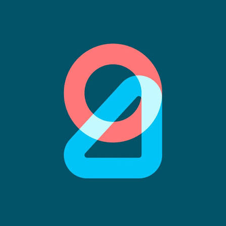
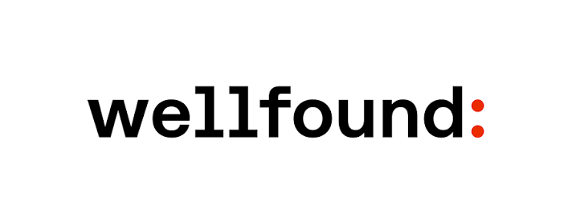

Portales de Empleo
Plataformas confiables donde encontrar oportunidades tech- locales, globales y remotas.

La red profesional más grande del mundo. Ideal para networking y búsqueda activa.
Abrir portal
Glassdoor
Empleos con transparencia salarial y reseñas de empresas útiles para negociar.
Abrir portal
Magneto
Plataforma colombiana enfocada en perfiles tech y empresas líderes.
Abrir portal
Computrabajo
Portal líder en latinoamerica con alta demanda de perfiles junior.
Abrir portal
Get on Board
Exclusivo para tech. Empresas que valoran el talento latinoamericano.
Abrir portal
Wellfound
Startups globales con roles remotos. Antes conocido como AngelList Talent.
Abrir portalEmpieza con LinkedIn + Get on Board para roles tech en Colombia y Latam. Si buscas trabajo remoto en USD, Wellfound y Remote OK son exelentes puntos de partida.